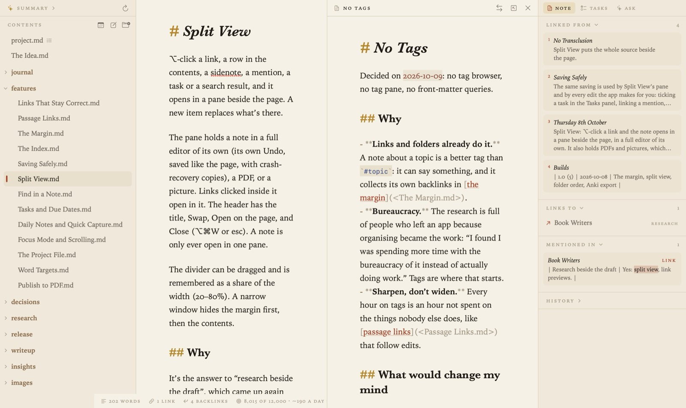

Focus Mode and Split View
Two ways to change what’s on screen: one note and nothing else, or two notes side by side.
Focus mode
View ▸ Focus Mode (⇧⌘D), or the button in the running head, puts away the contents, the margin and the word count, leaving just the page. Press ⇧⌘D again to leave it.
In Settings ▸ Appearance, under In focus mode:
- Keep the current line in the middle of the window, like a typewriter, so your eyes stay in one place as you write.
- Fade all but the current paragraph, so the rest of the note recedes.
Both are on by default. The line at the top of the page stays where it is as focus mode comes and goes, so you don’t lose your place.
Split view
Split view opens a second note in a pane beside the page. Hold ⌥ and click any of these:
- a link in a note
- a note in the contents (or right-click it and choose Open in Split View)
- a sidenote or a mention in the margin
- a search result or a task

The pane is a full editor of its own, with its own Undo and its own find box, and it saves just like the page. It can show a PDF or a picture too. A new ⌥-click replaces what’s in the pane.
- The buttons at the top of the pane swap it with the page, open its note on the page, or close it.
- View ▸ Close Side Pane (⌥⌘W), or esc in the pane, closes it.
- Drag the divider to share out the width. A narrow window hides the margin first, then the contents.
A note can be open in only one place at a time.
Related
- Writing and Formatting
- Themes and Settings, for text width and size